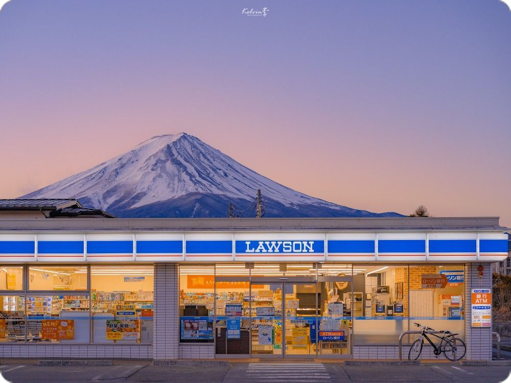
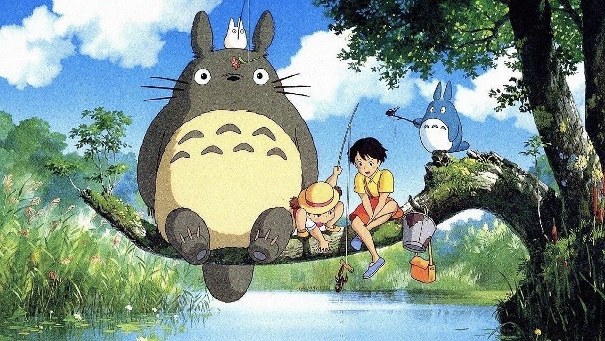
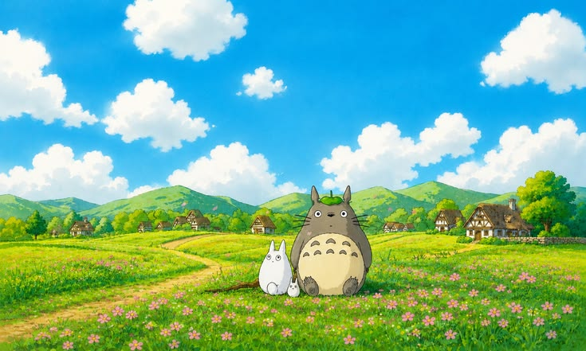

01 / HANKYUNG AI PORTFOLIO
생각을, 기사로.
새로운 시선으로 발견하고, AI와 함께 쓰는 이야기.
FEATURED ARTICLE · AI 스토리텔링
일상의 풍경에서 새로운 이야기를 찾다
익숙한 장면을 낯설게 바라보는 일. 한 장의 이미지에서 시작해, AI와 함께 이야기를 확장하는 과정을 기록했습니다.
기사 읽기 ↗최근 기록
작은 질문에서 시작된 이야기들
AI와 함께 쓰기
한 장의 사진이 기사가 되기까지
이미지 관찰부터 개요와 초안 작성까지.

프롬프트 노트
좋은 답변은 좋은 질문에서 시작된다
원하는 결과에 가까워지는 질문 설계의 기록.

배움의 기록
기술에 나만의 시선을 더하는 법
AI 교육에서 발견한 창작의 새로운 가능성.